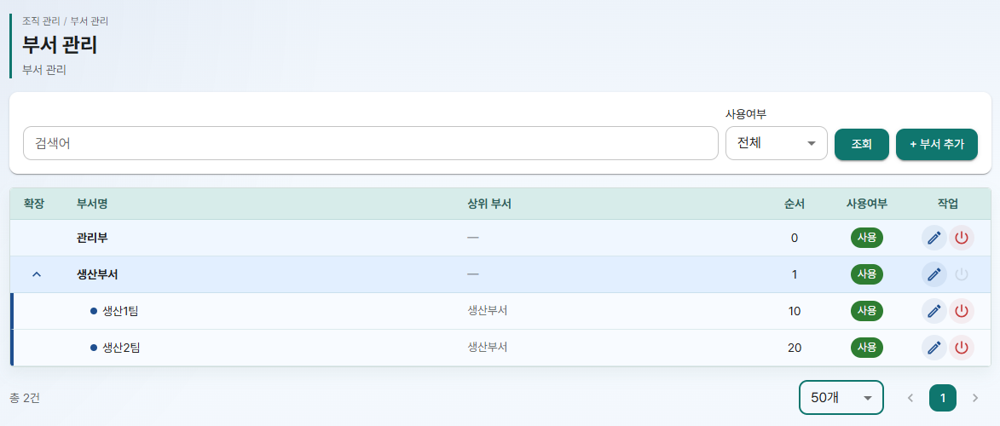
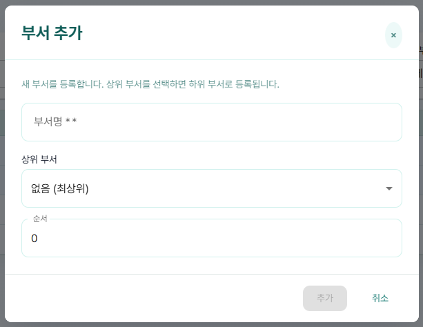
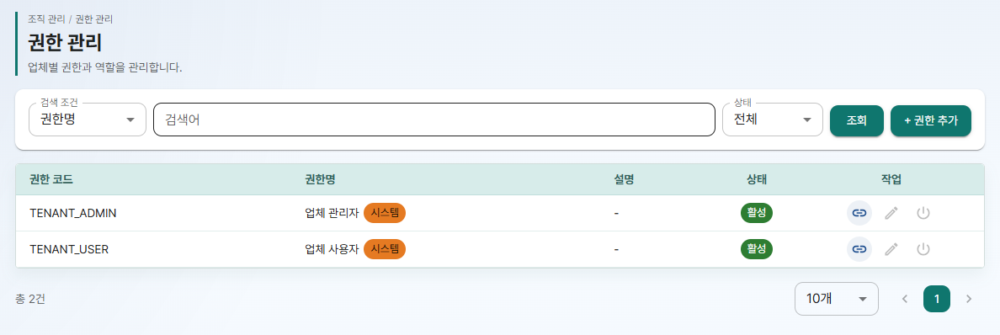
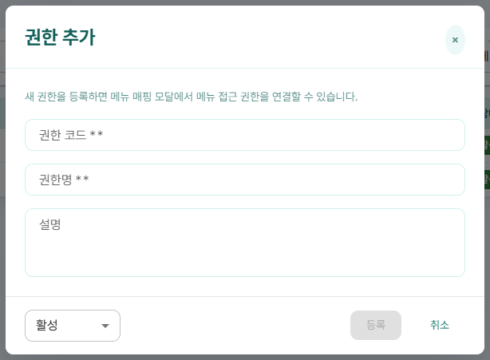
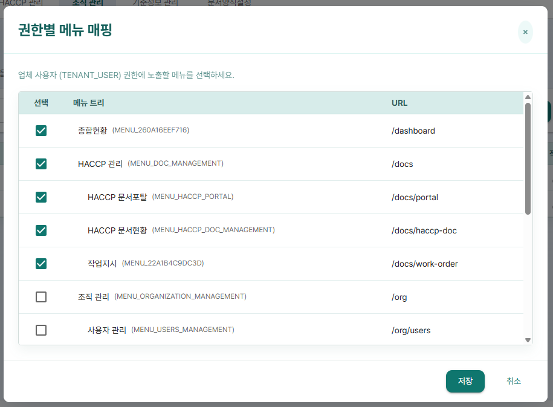
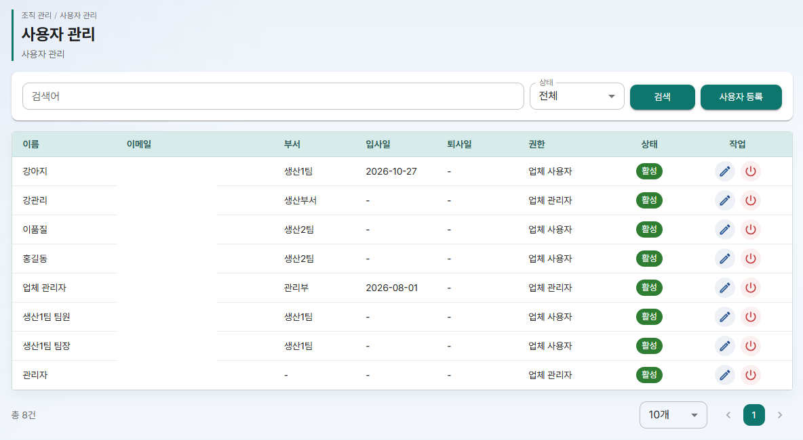
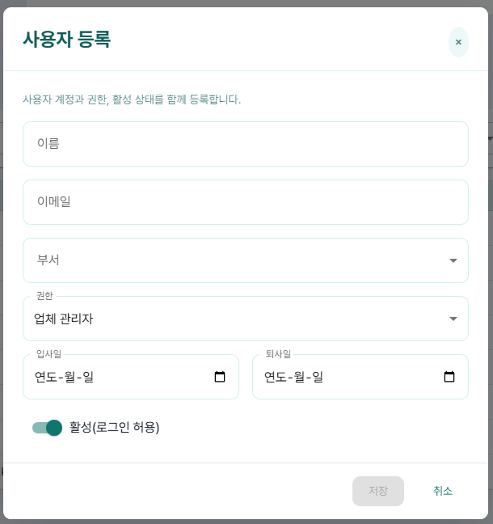
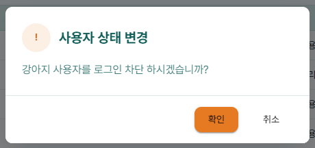

HACCP Cloud 사용 매뉴얼 ②편
조직 관리 관리자 전용
- 부서를 만들고 상위/하위 구조로 정리하는 방법
- 권한을 확인하고 권한마다 보여 줄 메뉴를 정하는 방법
- 사원을 등록하고, 로그인 ID 를 알려 주고, 퇴사자를 로그인 차단하는 방법
이 편은 업체관리자만 쓰는 기능입니다. 메뉴의 조직 관리에서 시작합니다.
1. 조직 관리 한눈에 보기
조직 관리 메뉴 아래에는 부서 관리, 권한 관리, 사용자 관리 세 화면이 있습니다. 사용자를 등록할 때 부서와 권한을 목록에서 고르므로, 부서와 권한을 먼저 준비한 뒤 사용자를 등록합니다.
준비 순서
①편 최초 설정에서 만든 부서와 사용자는 이 화면들에 그대로 보입니다. 이어서 고치거나 더 만들면 됩니다.
세 화면 모두 목록 오른쪽 작업 칸에 아이콘 버튼이 있습니다. 아이콘에 마우스를 올리면 이름이 보입니다.
- 연필 모양: 수정
- 전원 모양: 사용/미사용(또는 활성/비활성, 로그인 차단/차단 해제) 전환
- 고리 모양: 메뉴 매핑 (권한 관리에만 있음)
2. 부서 관리
조직 관리 > 부서 관리를 엽니다. 화면 위에 "부서를 등록하고 계층 구조를 관리합니다." 라는 설명이 보입니다.
목록에는 부서명, 상위 부서, 순서, 사용여부가 보입니다. 하위 부서가 있는 부서는 맨 앞 칸의 화살표로 펼치고 접습니다.

부서 찾기
검색어를 입력하고 사용여부(전체, 사용, 미사용)를 고른 뒤 조회를 누릅니다.
부서 추가
- + 부서 추가를 누릅니다. "부서 추가" 창이 열립니다.
- 부서명을 입력합니다. 꼭 입력해야 하는 칸입니다.
- 상위 부서를 고릅니다. 맨 위 부서라면 "없음 (최상위)" 를 그대로 둡니다. 상위 부서를 고르면 그 부서의 하위 부서로 등록됩니다.
- 순서를 입력합니다. 같은 단계 부서끼리 보이는 순서입니다.
- 추가를 누르고, "부서 등록 확인" 창에서 등록을 누릅니다.
- "부서가 등록되었습니다." 가 보이면 끝입니다.

부서 수정
- 목록 작업 칸의 연필 아이콘을 누릅니다. "부서 수정" 창이 열립니다.
- 부서명, 상위 부서, 순서, 사용여부를 고칩니다.
- 저장을 누르고, "부서 수정 확인" 창에서 저장을 누릅니다.
- "부서가 수정되었습니다." 가 보이면 끝입니다.
부서 사용/미사용 전환
- 목록 작업 칸의 전원 아이콘을 누릅니다. 마우스를 올리면 "미사용으로 변경" 또는 "사용으로 변경" 이 보입니다.
- "부서 미사용 확인"(또는 "부서 사용 확인") 창에서 미사용(또는 사용)을 누릅니다.
- "부서 상태가 변경되었습니다." 가 보이면 끝입니다.
3. 권한 관리
조직 관리 > 권한 관리를 엽니다. 권한은 사용자가 어떤 메뉴를 볼 수 있는지를 정합니다. 화면 위에 "권한 등록, 상태 관리, 권한별 메뉴 매핑을 한 화면에서 처리합니다." 라는 설명이 보입니다.
목록에는 권한 코드, 권한명, 설명, 상태가 보입니다. 처음에는 기본 권한 "업체 관리자" 와 "업체 사용자" 가 있습니다.

권한 찾기
검색 조건에서 권한 코드, 권한명, 설명 중 하나를 고르고 검색어를 입력합니다. 상태(전체, 활성, 비활성)를 고른 뒤 조회를 누릅니다.
권한 추가
기본 권한 두 개로 충분하면 이 단계는 건너뜁니다. 예를 들어 "현장 작업자" 처럼 일부 메뉴만 보여 줄 사용자 묶음이 필요할 때 만듭니다.
- + 권한 추가를 누릅니다. "권한 추가" 창이 열립니다.
- 권한 코드와 권한명을 입력합니다. 두 칸은 꼭 입력해야 합니다. 필요하면 설명도 입력합니다.
- 창 아래에서 활성 또는 비활성을 고릅니다.
- 등록을 누르고, "권한 등록 확인" 창에서 등록을 누릅니다.
- "권한이 등록되었습니다." 가 보이면 끝입니다. 이어서 아래 메뉴 매핑으로 이 권한에 보여 줄 메뉴를 정합니다.

권한 수정, 활성/비활성 전환
- 수정: 작업 칸 연필 아이콘 → "권한 수정" 창에서 고침 → 저장 → "권한 수정 확인" 창에서 저장. "권한이 수정되었습니다." 가 보입니다.
- 전환: 작업 칸 전원 아이콘 → "권한 비활성화 확인"(또는 "권한 활성화 확인") 창에서 비활성화(또는 활성화). "권한 상태가 변경되었습니다." 가 보입니다.
비활성 권한은 사용자 등록 창의 권한 목록에 나오지 않습니다.
메뉴 매핑: 권한마다 보여 줄 메뉴 정하기
- 작업 칸의 고리 모양 아이콘(메뉴 매핑)을 누릅니다. "권한별 메뉴 매핑" 창이 열리고 "(권한명) (권한 코드) 권한에 노출할 메뉴를 선택하세요." 안내가 보입니다.
- 메뉴 트리에서 이 권한에 보여 줄 메뉴에 체크하고, 숨길 메뉴는 체크를 풉니다.
- 저장을 누르고, "메뉴 매핑 저장 확인" 창에서 저장을 누릅니다.
- "권한별 메뉴 매핑이 저장되었습니다." 가 보이면 끝입니다.

4. 사용자 관리
조직 관리 > 사용자 관리를 엽니다. 화면 위에 "사용자 계정, 권한, 로그인 가능 상태를 운영합니다." 라는 설명이 보입니다.
목록에는 이름, 이메일, 부서, 입사일, 퇴사일, 권한, 상태(활성/비활성)가 보입니다.

사용자 찾기
검색어에 이름, 이메일, 부서 중 아무것이나 입력하고 상태(전체, 활성, 비활성)를 고른 뒤 검색을 누릅니다.
사용자 등록
- 사용자 등록을 누릅니다. "사용자 등록" 창이 열리고 "사용자 계정과 권한, 활성 상태를 함께 등록합니다." 안내가 보입니다.
- 이름, 이메일을 입력하고 부서, 권한을 고릅니다. 네 칸 모두 꼭 입력해야 합니다.
- 필요하면 입사일, 퇴사일을 입력합니다.
- 아래 스위치가 "활성(로그인 허용)" 인지 확인합니다. 처음에는 활성으로 되어 있습니다.
- 저장을 누릅니다.

새 사용자의 로그인 ID 알려 주기
사용자를 등록하면 로그인 ID 가 자동으로 만들어집니다.
- 이메일의 @ 앞부분이 로그인 ID 가 됩니다. 예:
hong@example.com→hong - 우리 업체에 같은 ID 가 이미 있으면 뒤에 숫자가 붙습니다. 예:
hong1
목록에는 로그인 ID 가 보이지 않으니, 관리자가 사원에게 업체번호(①편 로그인하기)와 함께 직접 알려 주세요. 초기 비밀번호는 플랫폼 담당자에게 확인하세요.
사용자 수정
- 목록 작업 칸의 연필 아이콘(사용자 수정)을 누릅니다. "사용자 수정" 창이 열리고 "사용자 정보를 수정하고 저장하세요." 안내가 보입니다.
- 바꿀 내용을 고치고 저장을 누릅니다.
로그인 차단, 차단 해제
- 목록 작업 칸의 전원 아이콘을 누릅니다. 마우스를 올리면 "로그인 차단" 또는 "차단 해제" 가 보입니다.
- "사용자 상태 변경" 창에 "(이름) 사용자를 로그인 차단 하시겠습니까?" 가 보이면 확인을 누릅니다.

퇴사자 처리
사용자를 삭제하는 기능은 없습니다. 퇴사자는 다음 순서로 정리합니다.
- 사용자 수정 창에서 퇴사일을 입력하고 저장합니다.
- 목록에서 그 사용자를 로그인 차단합니다.
5. 안내 메시지 풀이
| 화면에 나오는 메시지 | 뜻과 해결 방법 |
|---|---|
| 부서가 등록되었습니다. / 부서가 수정되었습니다. / 부서 상태가 변경되었습니다. | 저장이 끝났습니다. 목록에 바로 반영됩니다. |
| 부서 등록에 실패했습니다. / 부서 수정에 실패했습니다. / 부서 상태 변경에 실패했습니다. | 저장하지 못했습니다. 입력 내용을 확인하고 다시 시도하세요. |
| 하위 부서가 있어 미사용으로 변경할 수 없습니다. | 전원 아이콘에 마우스를 올리면 보입니다. 하위 부서를 먼저 미사용으로 바꾸세요. |
| 부서 목록을 불러올 수 없습니다. | 일시적인 연결 문제입니다. 화면을 새로 고치세요. |
| 권한이 등록되었습니다. / 권한이 수정되었습니다. / 권한 상태가 변경되었습니다. | 저장이 끝났습니다. |
| 권한 등록 처리에 실패했습니다. / 권한 수정 처리에 실패했습니다. / 권한 상태 변경에 실패했습니다. | 저장하지 못했습니다. 입력 내용을 확인하고 다시 시도하세요. |
| 권한별 메뉴 매핑이 저장되었습니다. | 메뉴 매핑 저장이 끝났습니다. |
| 권한별 메뉴 저장에 실패했습니다. | 메뉴 매핑을 저장하지 못했습니다. 다시 시도하세요. |
| 권한 목록을 불러올 수 없습니다. / 메뉴 매핑 정보를 불러오지 못했습니다. | 일시적인 연결 문제입니다. 화면을 새로 고치세요. |
| 퇴사일은 입사일 이후여야 합니다. | 퇴사일이 입사일보다 앞섭니다. 날짜를 고치세요. |
| 사용자 목록을 불러오지 못했습니다. | 일시적인 연결 문제입니다. 화면을 새로 고치세요. |
| 조회된 사용자가 없습니다. | 검색 조건에 맞는 사용자가 없습니다. 검색어를 지우거나 상태를 "전체" 로 바꿔 보세요. |
실패 메시지 자리에는 서버가 알려 준 이유가 대신 보일 수 있습니다.
사원이 비밀번호를 잊었어요
관리자 화면에서 비밀번호를 초기화하는 기능은 없습니다. HACCP Cloud 플랫폼 담당자에게 문의하세요.
새 사원이 로그인 ID 를 모른대요
이메일의 @ 앞부분이 로그인 ID 입니다. 같은 ID 가 있으면 뒤에 숫자가 붙습니다. 자세한 내용은 4. 사용자 관리의 "새 사용자의 로그인 ID 알려 주기" 를 보세요.
사용자 등록 창에 부서(권한)가 안 보여요
미사용 부서와 비활성 권한은 목록에 나오지 않습니다. 부서 관리에서 사용으로, 권한 관리에서 활성으로 바꾸세요.